Ukraine NPP Analysis
Michael Wellington, Roger Lawes and Petra Kuhnert
4 August 2022
Ukraine-NPP-analysis.RmdOverview
The following script accompanies the paper by Wellington et al. (2022) that explores crop production and grain exports in Ukraine. This first vignette focuses on trends in crop production using Net Primary Productivity (NPP).
Reading in relevant datasets
We load in NPP data clipped to Ukraine and load in the relevant shape
file. These datasets are also available in the /data and
/inst/extdata directories and can be read in using the
readRDS and st_read commands respectively.
library(UkraineCrops)
data(NPP_mod_df)
data(Ukr_bnds)
data(Ukr_FAOSTAT)Fitting the Generalised Additive Model (GAM)
We fit a Generalised Additive Model (GAM) (Wood 2006) assuming a Gaussian distribution for the response variable, NPP and include smooth terms for year, season, space and relevant interactions, which consist of season within year, and space and time.
all_f <- NPP ~
# smooth term for year
s(year, bs="cr", k=13) +
# cyclic term for season
s(month, bs="cc", k=12) +
# smooth term for space
s(x,y, bs='gp', k=50) +
# seasonal within year
ti(month, year, bs = c("cc", "cr"), k = c(12,11)) +
# space x time
ti(x, y, year, d = c(2, 1), bs = c("gp", "cr"),
k = c(50,11), m=list(2, NA)) We then add in the factor inv which allows us to
investigate a pre and post invasion effect.
all_f_war <- NPP ~
# smooth term for year
war +
# cyclic term for season
s(month, bs="cc", k=12, by=war) +
# smooth term for space
s(x,y, bs='gp', k=50, by=war) +
# space x time
ti(x, y, month, d = c(2, 1), bs = c("gp", "cr"),
k = c(50,12), m=list(2, NA), by=war) We also explore a GAM structure that fits a term reflecting the pre
(2012-21) and post war (2022) periods. This term which we refer to as
war represents a binary variable where 1 indicates year
2022 when the war began.
all_f_war <- NPP ~
# smooth term for year
war +
# cyclic term for season
s(month, bs="cc", k=12, by=war) +
# smooth term for space
s(x,y, bs='gp', k=50, by=war) +
# space x time
ti(x, y, month, d = c(2, 1), bs = c("gp", "cr"),
k = c(50,12), m=list(2, NA), by=war) We now fit each model using the mgcv package in
R and store the results. To accommodate temporal
dependencies we fit a correlation term in each model that was the result
of an iterative process as outlined in Wood et al. (2017). The final
model fit for the invasion model is presented here from which we extract
effect direction and size.
# Run GAMs for large datasets
all_gam <- bam(all_f, data=npp_mod_df, discrete=TRUE, nthreads=8, rho=0.8)
all_gam_war <- bam(all_f_war, data=npp_mod_df, discrete=TRUE, nthreads=8, rho=0.6)
# Output shows effect of the invasion on cropland NPP
summary(all_gam_war)##
## Family: gaussian
## Link function: identity
##
## Formula:
## NPP ~ war + s(month, bs = "cc", k = 12, by = war) + s(x, y, bs = "gp",
## k = 50, by = war) + ti(x, y, month, d = c(2, 1), bs = c("gp",
## "cr"), k = c(50, 12), m = list(2, NA), by = war)
##
## Parametric coefficients:
## Estimate Std. Error t value Pr(>|t|)
## (Intercept) 128.64673 0.09257 1389.780 <2e-16 ***
## warPost-invasion 8.74608 30.84583 0.284 0.777
## ---
## Signif. codes: 0 '***' 0.001 '**' 0.01 '*' 0.05 '.' 0.1 ' ' 1
##
## Approximate significance of smooth terms:
## edf Ref.df F p-value
## s(month):warPre-invasion 9.997 10.00 1.931e+05 <2e-16 ***
## s(month):warPost-invasion 5.994 6.00 1.737e+04 <2e-16 ***
## s(x,y):warPre-invasion 48.681 48.96 1.621e+03 <2e-16 ***
## s(x,y):warPost-invasion 39.109 40.70 4.709e+00 <2e-16 ***
## ti(month,x,y):warPre-invasion 479.596 513.58 3.247e+02 <2e-16 ***
## ti(month,x,y):warPost-invasion 231.968 264.69 6.274e+01 <2e-16 ***
## ---
## Signif. codes: 0 '***' 0.001 '**' 0.01 '*' 0.05 '.' 0.1 ' ' 1
##
## R-sq.(adj) = 0.824 Deviance explained = 82.4%
## fREML = 3.9609e+06 Scale est. = 1552 n = 813008Model Checking
We examine the fit of the model and check for temporal and spatial autocorrelation in the residuals. These diagnostics are examined below and sufficiently account for correlation in the data with the given model structure.
# Temporal autocorrelation plot
check_resid(all_gam, ask=FALSE)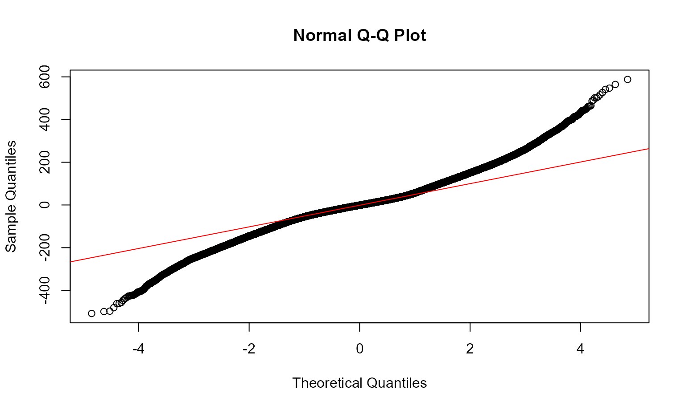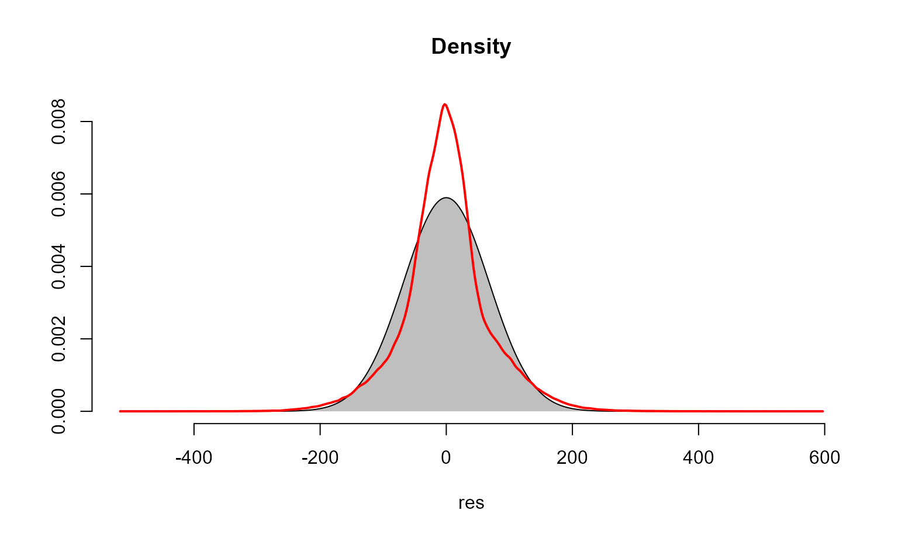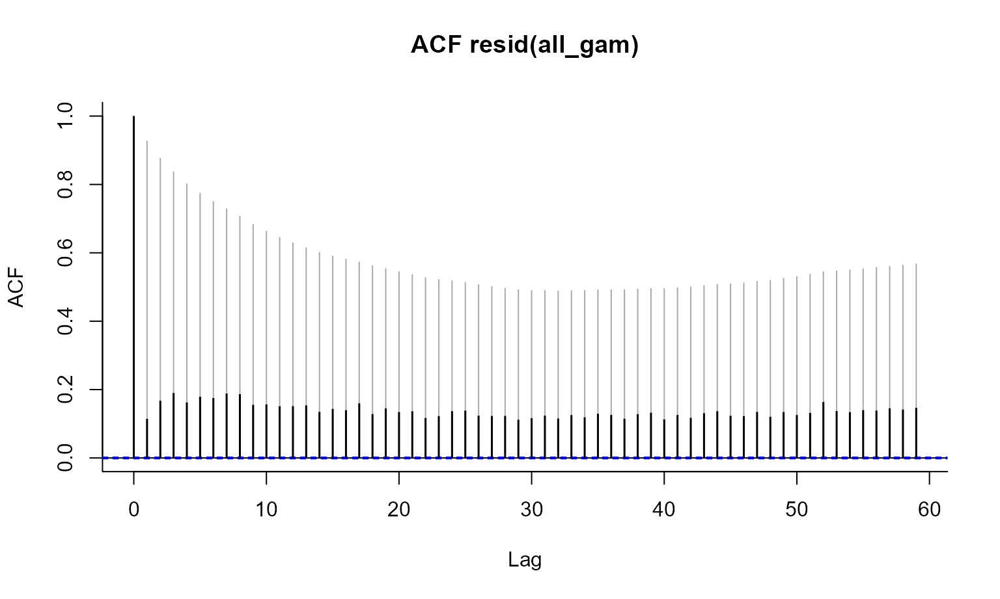
# Variogram for spatial autocorrelation
resids <- residuals.gam(all_gam)
data_pred <- data.frame(resids = resids, long = npp_mod_df$x, lat = npp_mod_df$y)
coordinates(data_pred) <- ~long+lat
# Select a sample for compute efficiency
var_plot <- variogram (resids ~ 1, data = data_pred[sample(1:nrow(data_pred), 10000),])
plot(var_plot)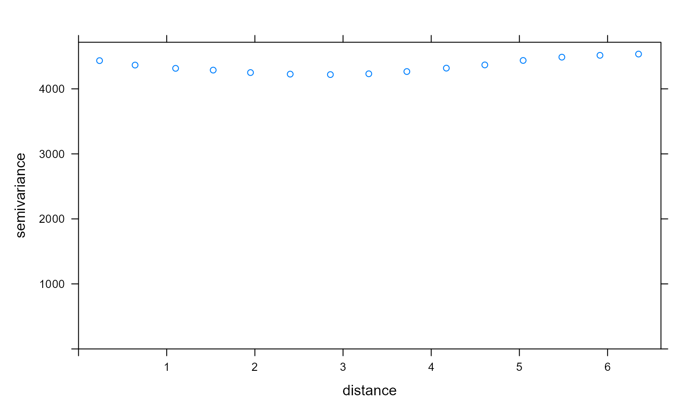
Investigating trends and agreement with ground data
We generate a summed effect of year plot, extract data from it, and pass it to a ggplot2 object.
Ukr_year_smplot <- plot_smooth(all_gam, view='year', rm.ranef = F)## Summary:
## * year : numeric predictor; with 30 values ranging from 2010.000000 to 2022.000000.
## * month : numeric predictor; set to the value(s): 7.
## * x : numeric predictor; set to the value(s): 31.7779031.
## * y : numeric predictor; set to the value(s): 49.0704723.
Ukr_year_sm_ggplot <- ggplot() + geom_line(aes(y=Ukr_year_smplot$fv$fit,
x=Ukr_year_smplot$fv$year)) +
geom_ribbon(aes(x=Ukr_year_smplot$fv$year,
ymax= Ukr_year_smplot$fv$ul, ymin=Ukr_year_smplot$fv$ll), alpha=0.2) +
scale_x_continuous(breaks=seq(2010,2022,1), limits = c(2009.5,2022)) + theme_bw() + ylim(c(0,330)) +
labs(x="Year", y="NPP")We will also generate a bar plot showing the total crop production tonnage in Ukraine from 2010 to 2020 and the crops comprising it. These data were taken from the FAOSAT database.
Ukr_grain_dat <- Ukr_grain_dat %>% filter(Element == "Production")
Ukr_real_grain <- ggplot() + geom_bar(data=Ukr_grain_dat, aes(fill=Item, y=Value, x=Year),
position="stack", stat="identity") + scale_fill_npg() +
theme_bw() + labs(fill='Crop Type', y= 'Total tonnes produced') +
scale_y_continuous(labels = unit_format(unit = "M", scale = 1e-6)) +
scale_x_continuous(breaks=seq(2010,2021, 1))Before we format the final plot, we’ll perform a correlation test to check agreement between total crop production from FAOSTAT data and our NPP model. First of all, we extract the prediction terms for the year effect from our GAM.
Ukr_annual_preds_terms <- predict(all_gam, type="iterms", ## Predict without new data
se.fit=TRUE)
head(Ukr_annual_preds_terms$fit)## s(year) s(month) s(x,y) ti(year,month) ti(year,x,y)
## 1 -8.362206 -130.8111 27.40552 11.33822 -4.180633
## 2 -8.362206 -130.8111 26.32686 11.33822 -2.047021
## 3 -8.362206 -130.8111 25.67037 11.33822 -0.752134
## 4 -8.362206 -130.8111 23.65540 11.33822 2.265061
## 5 -8.362206 -130.8111 31.78263 11.33822 4.565532
## 6 -8.362206 -130.8111 27.54546 11.33822 3.864531
Ukr_annual_preds_fit <- as.data.frame(Ukr_annual_preds_terms$fit)
Ukr_annual_preds_fit$year <- npp_mod_df$year
names(Ukr_annual_preds_fit) <- c('year_hat', 'month_hat', 'space_hat', 'yxm_hat', 'yxs_hat', 'year')
Ukr_annual_terms <- Ukr_annual_preds_fit %>% group_by(year) %>%
summarise(year_term=mean(year_hat)) %>% filter(year<2021)We’ll also summarise the crop production data and create a dataframe prior to the correlation test.
Ukr_grainprod_annual <- Ukr_grain_dat %>% group_by(Year) %>% filter(Element =="Production") %>%
summarise(tonnes=sum(Value))
Ukr_corr_df <- bind_cols(Ukr_grainprod_annual$tonnes, Ukr_annual_terms$year_term)## New names:
## • `` -> `...1`
## • `` -> `...2`Let’s inspect the relationship to see if it is linear before formally conducting the test.
ggscatter(data = Ukr_corr_df, x = 'YearTerms', y = 'RealTonnes',
add = "reg.line", conf.int = TRUE,
cor.coef = TRUE, cor.method = "pearson",
xlab = "Predicted NPP term", ylab = "Real T crop produced")## `geom_smooth()` using formula 'y ~ x'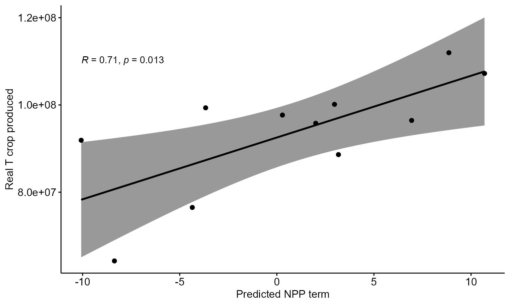
Check both columns for normality and conduct a correlation test.
shapiro.test(Ukr_grainprod_annual$tonnes)##
## Shapiro-Wilk normality test
##
## data: Ukr_grainprod_annual$tonnes
## W = 0.91562, p-value = 0.2839
shapiro.test(Ukr_annual_terms$year_term)##
## Shapiro-Wilk normality test
##
## data: Ukr_annual_terms$year_term
## W = 0.96143, p-value = 0.7894
cor.test(Ukr_grainprod_annual$tonnes, Ukr_annual_terms$year_term, method="pearson", alternative="greater")##
## Pearson's product-moment correlation
##
## data: Ukr_grainprod_annual$tonnes and Ukr_annual_terms$year_term
## t = 3.0657, df = 9, p-value = 0.006724
## alternative hypothesis: true correlation is greater than 0
## 95 percent confidence interval:
## 0.3051798 1.0000000
## sample estimates:
## cor
## 0.714719Finally, we can plot the summed effect of year alongside the real production data.
Ukr_realagree <- ggdraw() +
draw_plot(Ukr_year_sm_ggplot, x=0, y=0.5, width=0.915, height=0.5) +
draw_plot(Ukr_real_grain, x=0, y=0, width=1, height=0.5) +
theme(plot.background = element_rect(fill="white", color = NA))
Ukr_realagree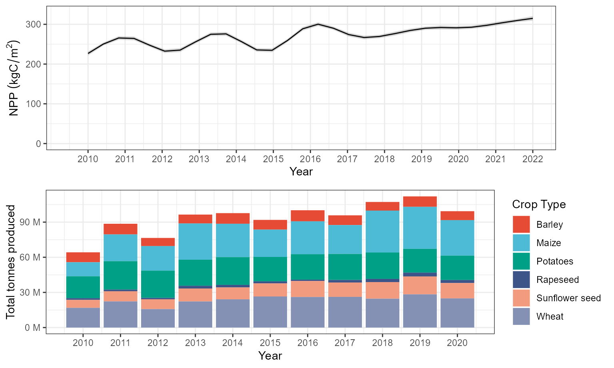 # Monthly effect and crop calendar
We’d also like to inspect the effect of the month on cropland NPP pre and post invasion. We can do this with the plot_smooth function again. The code chunk below also produces a crop calendar adapted from the UN FAO GIEWS Factsheet.
month_war_plot <- plot_smooth(all_gam_war, view="month",plot_all="war", rm.ranef = F)## Summary:
## * war : factor; set to the value(s): Post-invasion, Pre-invasion.
## * month : numeric predictor; with 30 values ranging from 1.000000 to 12.000000.
## * x : numeric predictor; set to the value(s): 31.7779031.
## * y : numeric predictor; set to the value(s): 49.0704723.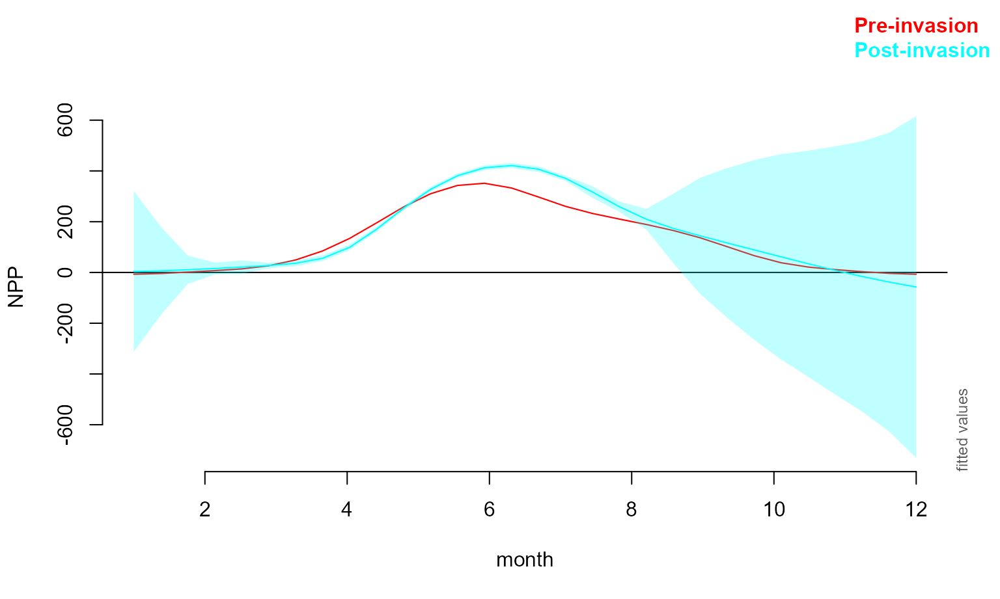
month_war_plot_dat <- month_war_plot$fv %>% select(war, month, fit, ll, ul) %>%
filter(war=="Pre-invasion" | month<8&month>2.8)
month_war_plot_dat$month_abb <- month.abb[month_war_plot_dat$month]
month_comp_plot <- ggplot(data=month_war_plot_dat) + geom_line(aes(x=month, y=fit, col=war)) +
geom_ribbon(aes(ymin=ll, ymax=ul, x=month, fill=war), alpha=0.2) + theme_bw() +
scale_x_continuous(breaks = 1:12,
labels = c('Jan', 'Feb', 'Mar', 'Apr', 'May', 'Jun', 'Jul', 'Aug', 'Sep', 'Oct', 'Nov', 'Dec')) +
labs(y='NPP', x='Month') +
theme(legend.title=element_blank()) + scale_fill_npg()
colors <- c("Sowing" = "brown", "Growing" = "darkgreen", "Harvest" = "orange")
Ukr_crop_cal <- ggplot() +
geom_linerange(aes(x= "Winter Cereals", ymin=as.Date("2013-01-01"), ymax=as.Date("2013-06-30"), color="Growing"), size=5) +
geom_linerange(aes(x= "Winter Cereals", ymin=as.Date("2013-06-30"), ymax=as.Date("2013-08-20"), color="Harvest"), size=5) +
geom_linerange(aes(x= "Winter Cereals", ymin=as.Date("2013-09-01"), ymax=as.Date("2013-10-30"), color="Sowing"), size=5) +
geom_linerange(aes(x= "Winter Cereals", ymin=as.Date("2013-10-30"), ymax=as.Date("2013-12-31"), color="Growing"), size=5) +
geom_linerange(aes(x= "Maize", ymin=as.Date("2013-05-01"), ymax=as.Date("2013-06-10"), color="Sowing"), size=5) +
geom_linerange(aes(x= "Maize", ymin=as.Date("2013-06-10"), ymax=as.Date("2013-10-01"), color="Growing"), size=5) +
geom_linerange(aes(x= "Maize", ymin=as.Date("2013-10-01"), ymax=as.Date("2013-11-30"), color="Harvest"), size=5) +
geom_linerange(aes(x= "Sunflower", ymin=as.Date("2013-04-01"), ymax=as.Date("2013-06-01"), color="Sowing"), size=5) +
geom_linerange(aes(x= "Sunflower", ymin=as.Date("2013-06-01"), ymax=as.Date("2013-08-31"), color="Growing"), size=5) +
geom_linerange(aes(x= "Sunflower", ymin=as.Date("2013-08-31"), ymax=as.Date("2013-10-30"), color="Harvest"), size=5) +
geom_linerange(aes(x= "Rapeseed", ymin=as.Date("2013-01-01"), ymax=as.Date("2013-06-30"), color="Growing"), size=5) +
geom_linerange(aes(x= "Rapeseed", ymin=as.Date("2013-06-30"), ymax=as.Date("2013-08-31"), color="Harvest"), size=5) +
geom_linerange(aes(x= "Rapeseed", ymin=as.Date("2013-08-31"), ymax=as.Date("2013-10-01"), color="Sowing"), size=5) +
geom_linerange(aes(x= "Rapeseed", ymin=as.Date("2013-10-01"), ymax=as.Date("2013-12-31"), color="Growing"), size=5) +
geom_linerange(aes(x= "Potatoes", ymin=as.Date("2013-04-01"), ymax=as.Date("2013-06-01"), color="Sowing"), size=5) +
geom_linerange(aes(x= "Potatoes", ymin=as.Date("2013-06-01"), ymax=as.Date("2013-09-01"), color="Growing"), size=5) +
geom_linerange(aes(x= "Potatoes", ymin=as.Date("2013-09-01"), ymax=as.Date("2013-10-31"), color="Harvest"), size=5) +
coord_flip() + scale_y_date(lim = c(as.Date("2013-01-01"), as.Date("2013-12-31")),breaks=date_breaks(width = "1 month"), labels = date_format("%b"))+
labs(x="", y="Month") + theme_bw()+ scale_color_manual(values = colors) + theme(legend.title=element_blank())Now we can combine the plots.
Ukr_cropplots <- ggdraw() +
draw_plot(month_comp_plot, x=0.075, y=0.5, width=0.91, height=0.5) +
draw_plot(Ukr_crop_cal, x=0, y=0, width=1, height=0.5)+
theme(plot.background = element_rect(fill="white", color = NA))
Ukr_cropplots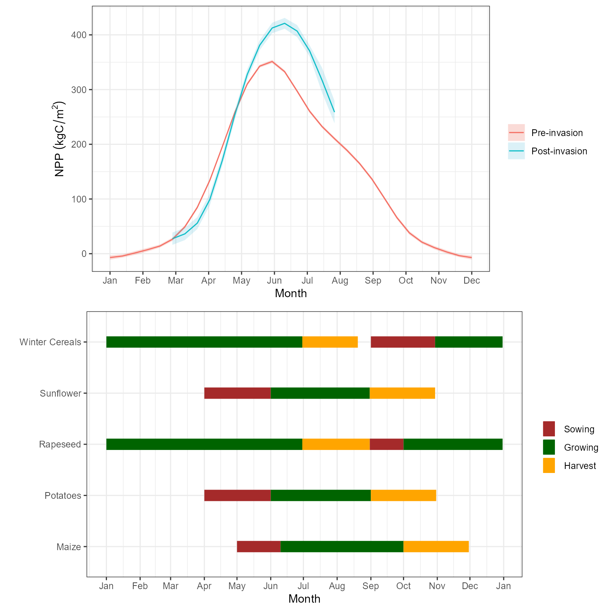
Generate a spatial plot with uncertainty
We will use the Vizumap package to compare the distribution of NPP pre and post invasion and visualise uncertainty associated with the estimate (Lucchesi, 2021). First, we extract data from the GAMs.
space_nowar <- fvisgam(all_gam_war, view = c("x", "y"),
cond = list(war = "Pre-invasion"),
main = "Pre-invasion", rm.ranef = T,
n.grid=100,
too.far=0.01)## Summary:
## * war : factor; set to the value(s): Pre-invasion.
## * month : numeric predictor; set to the value(s): 7.
## * x : numeric predictor; with 100 values ranging from 22.121014 to 40.087319.
## * y : numeric predictor; with 100 values ranging from 44.354317 to 52.439155.
## * NOTE : The following random effects columns are canceled: s(month):warPre-invasion,s(month):warPost-invasion
## 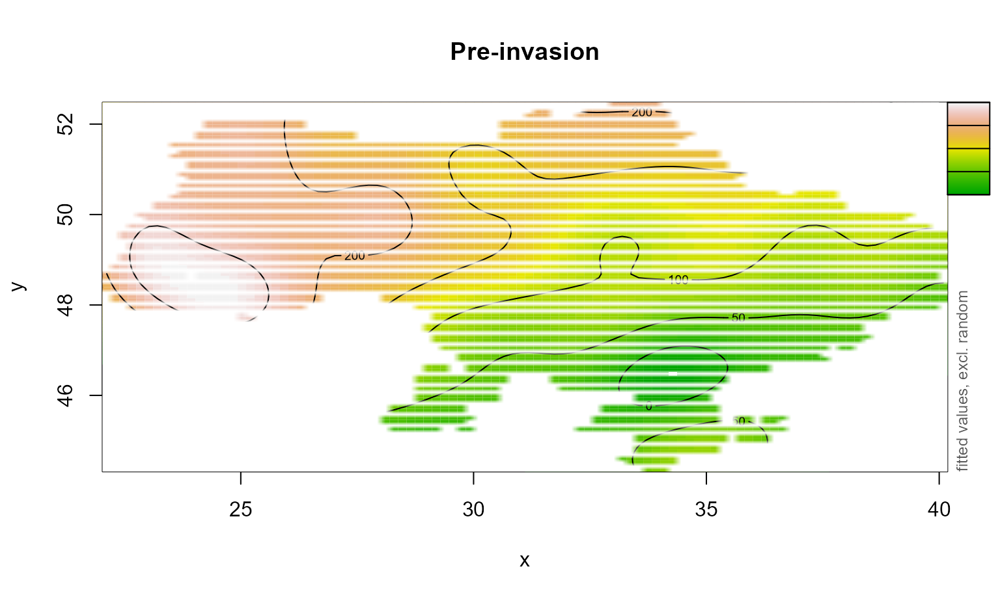
# Extract data for plotting spatial term
space_nowar_dat <- space_nowar$fv
space_nowar_dat$SE <- space_nowar_dat$CI/1.96
# Rpt for war
space_war <- fvisgam(all_gam_war, view = c("x", "y"),
cond = list(war = "Post-invasion"),
main = "Post-invasion", rm.ranef = T,
n.grid=100,
too.far=0.01)## Summary:
## * war : factor; set to the value(s): Post-invasion.
## * month : numeric predictor; set to the value(s): 7.
## * x : numeric predictor; with 100 values ranging from 22.121014 to 40.087319.
## * y : numeric predictor; with 100 values ranging from 44.354317 to 52.439155.
## * NOTE : The following random effects columns are canceled: s(month):warPre-invasion,s(month):warPost-invasion
## 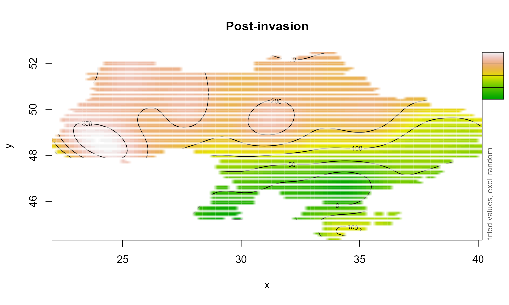
# Extract data for plotting spatial term
space_war_dat <- space_war$fv
space_war_dat$SE <- space_war_dat$CI/1.96Next, we use Vizumap functions to build a palette and colour key.
# Create palette
npp_pal <- build_palette(name = "usr",
colrange = list(colour = c("chartreuse4", "darkblue"),
difC = c(3, 4)))
view(npp_pal)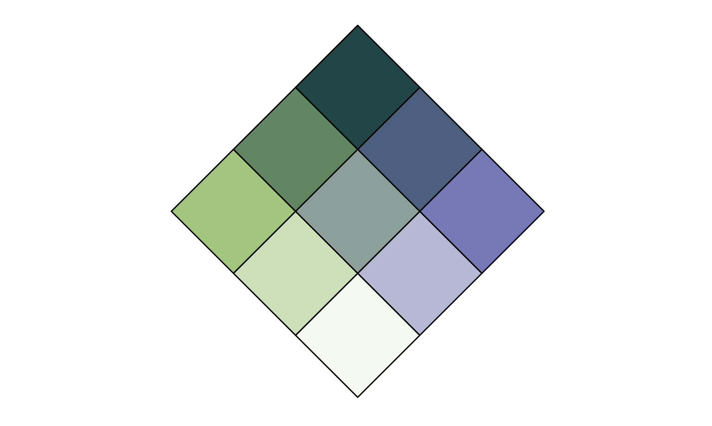
# creating df for Vizumap plotting
space_npp_dat <- bind_rows(space_nowar_dat, space_war_dat)
npp_war_df <- read.uv(data = space_npp_dat, estimate = "fit",
error = "SE")
names(npp_war_df)[c(1, 5,6)] <- c("Estimate", "long", "lat")
# build key
UKey <- build_bkey(data = npp_war_df, terciles = T, palette = npp_pal)
k <- view(UKey)
nppBivMap <- build_bmap(data = npp_war_df, terciles = T,
palette = npp_pal)Finally, we can build the Vizumap plot.
obj <- nppBivMap
obj_cropped <- exclude.too.far(obj$output_data$long, obj$output_data$lat,
npp_mod_df$x, npp_mod_df$y, dist=0.015)
m <- ggplot() +
geom_raster(data = obj$output_data[!obj_cropped,],
aes(x = long, y = lat, fill = hex_code)) +
facet_wrap(~war, nrow=2) + scale_fill_identity() + coord_quickmap() +
xlab("") + ylab("") + geom_sf(data=Ukr_bnds, alpha=0) + theme_bw()## Coordinate system already present. Adding new coordinate system, which will replace the existing one.
mk <- ggdraw() +
draw_plot(m, x=0, y=0, width=0.6, height=1) +
draw_plot(k, x=0.6, y=0, width = 0.4, height=1)+
theme(plot.background = element_rect(fill="white", color = NA))
mk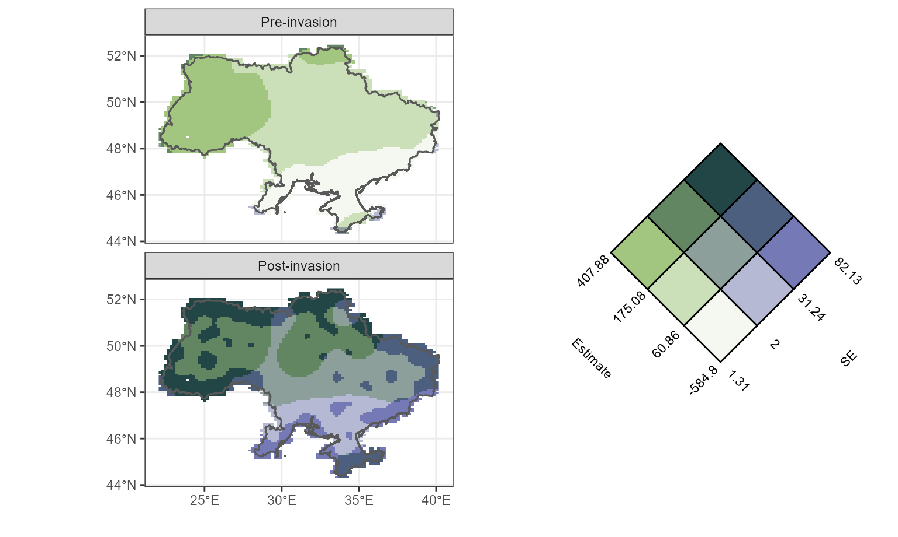
References
Lucchesi, L., Kuhnert, P., Wikle, C. (2021). Vizumap: an R package for visualising uncertainty in spatial data. Journal of Open Source Software, 6(59), 2409, https://doi.org/10.21105/joss.02409
Wellington, M., Lawes, R., Kuhnert, P. (2022) Rapid monitoring of crop growth, grain exports, and fire patterns in Ukraine, Nature Food, Under Review.
Wood, S. N., Li, Z., Shaddick, G. & Augustin, N. H. (2017) Generalized Additive Models for Gigadata: Modeling the U.K. Black 166 Smoke Network Daily Data. J. Am. Stat. Assoc. 112, 1199–1210, DOI: 10.1080/01621459.2016.1195744.
Wood, S. N. (2006) Generalized additive models: an introduction with R, Chapman and Hall/CRC.